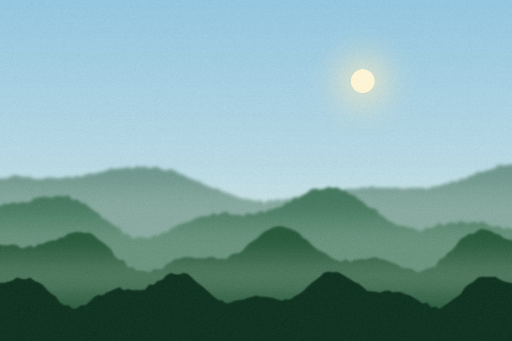
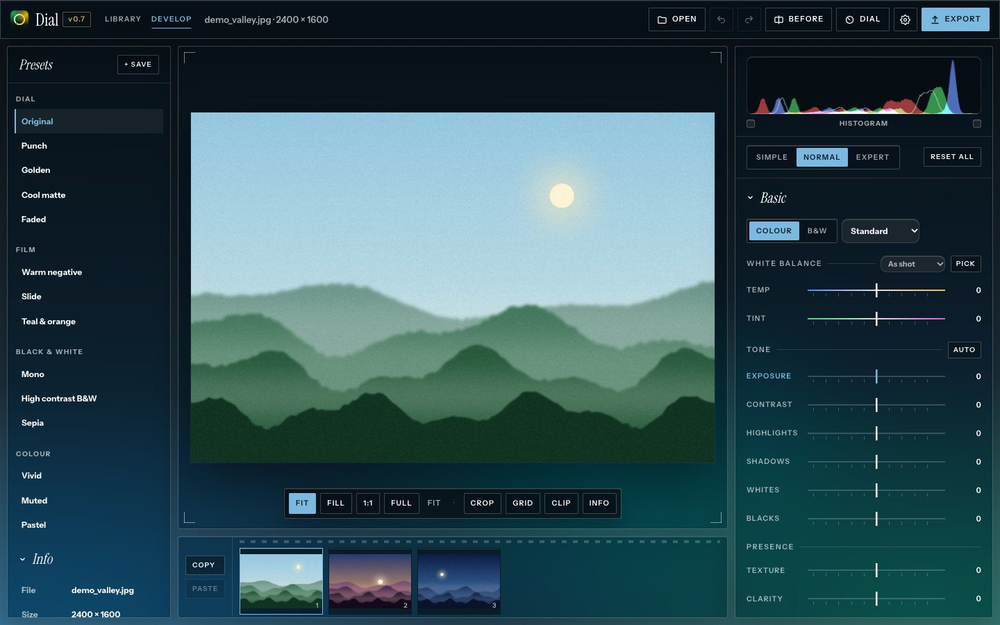

Dialit in.
Dial is a photo editor that starts with one preset and a few sliders, and goes as deep as you want. Your photos never leave your computer.
No account. No upload. Works on a computer, a tablet and a phone.

BeforeTry it: drag the dial around. Double-click it to go back to 0.
This is one small piece of Dial. Pick another picture and watch the page change colour with it. The pictures are drawings made for this page.
Speed measured on a MacBook with 8 GB of memory. A slower computer will be slower.
Start simple. Go as deep as you like.
Simple mode shows about ten sliders. Normal shows the ones most people use. Expert shows everything a pro editor has.
Presets
Punch, Golden, film looks and black and white. Turn the amount up or down, or save your own.
Tone curve
Light and dark exactly where you want them, for all colours or for red, green and blue alone.
Colour mixer and grading
Change one colour at a time, and tint shadows, midtones and highlights separately.
Masks and healing
Brush, gradient, radial, colour and brightness masks, and a heal tool for dust, spots and red eyes.
Lens blur
Soft backgrounds with real-looking bokeh: blade shapes, rings, swirl and cat's eye.
Library
Flags, stars and colour labels for many photos. Copy one edit onto a whole set.
Crop and straighten
Shapes like 1:1, 4:5 and 3:2, a straighten tool, and guides to help you frame.
Export
Resize, sharpen and add a watermark. Camera info is kept, your location is always left out.
The whole editor on one screen.
Shaped like the editors photographers already know, with fewer things in your way.

It takes on your photo's colours.
You saw it at the top of this page. Dial does the same with your photos: open an evening sky and it picks up the purples, open the sea and it turns blue. It follows along while you edit.
- Or pick your own: seven fixed backgrounds and seven accent colours. Try the dots.
- Two styles: Camera, with thin lines and square corners, or the round old look. And liquid glass for either one.
- Dial mode: one big round dial instead of sliders. Press Q in the app.
Your photos stay on your computer.
Dial runs only in your browser. Photos are never uploaded and there is no account. Even the fonts are part of Dial, so opening it doesn't ask another company for anything.